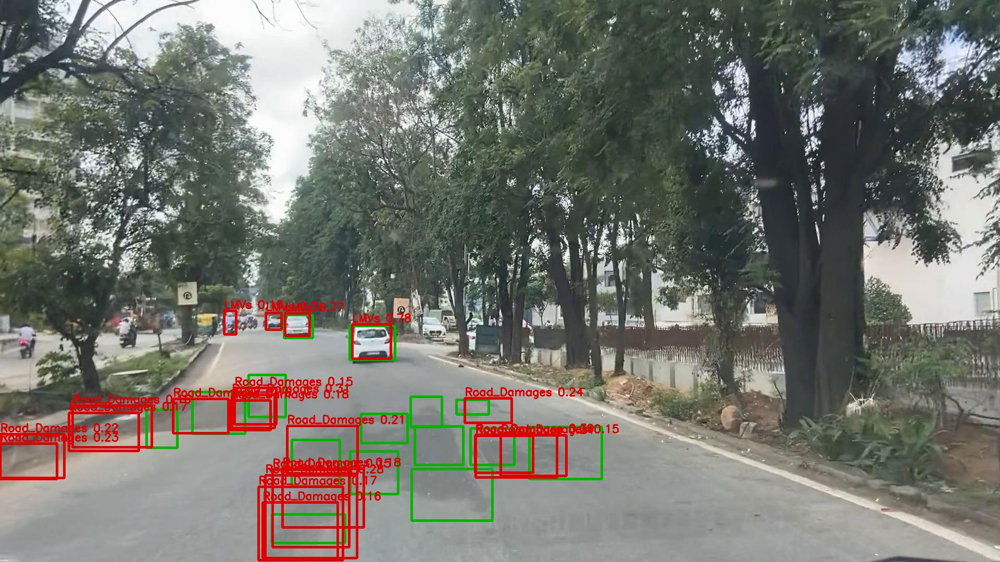
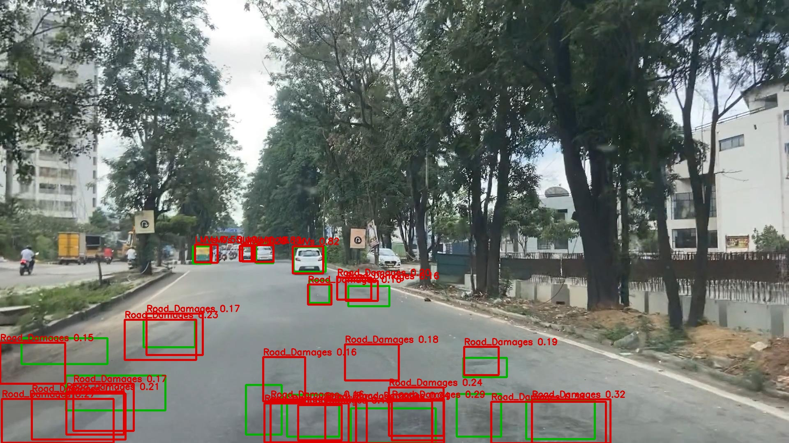
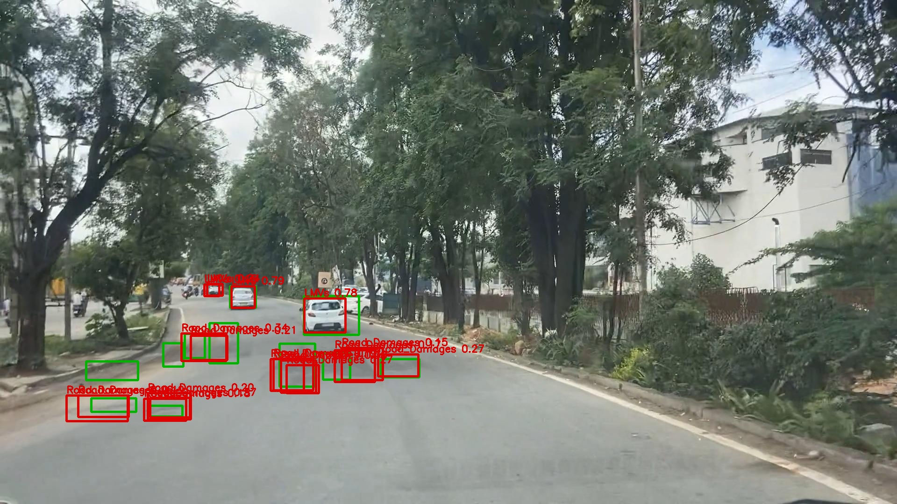
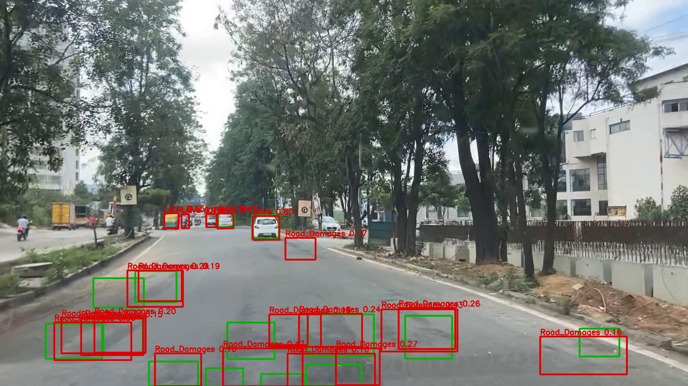
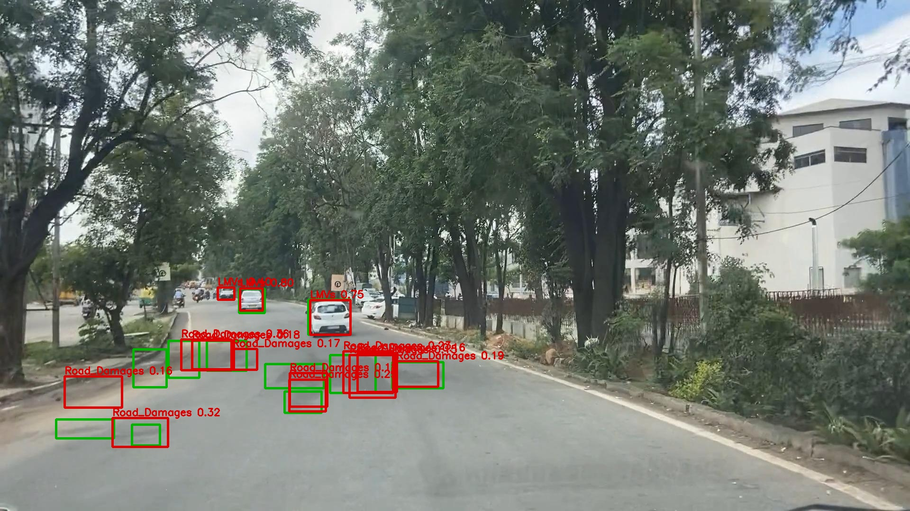
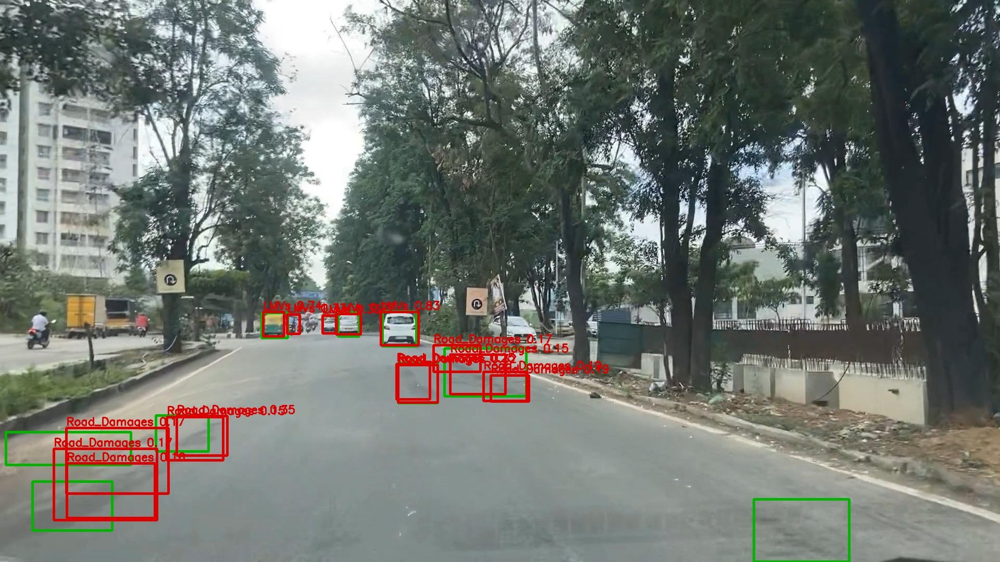

Green boxes are ground truth; red boxes are model predictions.
13 false negative(s), 20 false positive(s), lowest confidence 0.15.

5 false negative(s), 19 false positive(s), lowest confidence 0.15.

7 false negative(s), 14 false positive(s), lowest confidence 0.15.

6 false negative(s), 14 false positive(s), lowest confidence 0.15.

8 false negative(s), 11 false positive(s), lowest confidence 0.15.

4 false negative(s), 11 false positive(s), lowest confidence 0.15.
